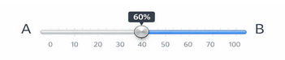

1 Deservingness and Inequality in Higher Education Access: A Conjoint Survey Experiment
1.1 Research Question & Motivation
Access to higher education in Chile is shaped by a complex interplay of merit, need, and institutional constraints. While public policy debates often invoke abstract principles of fairness, little is known about how individuals actually weigh competing criteria when forced to make distributive decisions under scarcity.
This project uses a conjoint survey experiment to study how people evaluate deservingness and inequality in access to higher education in Chile. Specifically, we ask:
- What attributes of applicants (merit signals, need, reciprocity, identity) drive scholarship allocation decisions?
- How do respondents navigate trade-offs when multiple criteria pull in different directions?
- Do preferences vary systematically across respondent subgroups?
The focus is on institutions not covered by the gratuidad system, where students lack access to free state financing — a segment that remains understudied despite representing a meaningful share of Chilean enrollment.
1.2 Conjoint Design Overview
Respondents are asked to imagine they serve on a public committee allocating a first-year scholarship ($2,400,000 CLP, equivalent to 75% of annual tuition) between two applicants admitted to the same program (Ingeniería Comercial, annual tuition: $3,200,000 CLP) at a non-gratuidad institution. Both applicants share the same PAES score (60th percentile), which is held constant to isolate the effects of the remaining attributes.
Task format: Rather than a binary forced choice, respondents allocate the full budget between the two applicants using a continuous slider (0–100%), with Applicant B automatically set to \(100 - A\). This budget-allocation format makes trade-offs explicit and yields a continuous outcome variable.
Design parameters:
| Parameter | Value |
|---|---|
| Profiles per task (\(J\)) | 2 |
| Tasks per respondent (\(K\)) | 8–10 |
| Target sample (\(N\)) | ~2,000 |
| Total profile evaluations | ~40,000 |
| Randomization | Uniform, independent per attribute (\(p = 0.5\)) |
| Sampling design | Quota-based (age, gender, education, SES) |
Attribute order is randomized at the respondent level (fixed across tasks within a respondent) to reduce primacy effects.
1.3 Attributes & Levels
Attributes operationalize deservingness criteria drawn from the CARIN framework (Control, Attitude, Reciprocity, Identity, Need). All attributes are binary to minimize cognitive load.
| CARIN Dimension | Attribute | Options |
|---|---|---|
| Control | Academic performance | 1. Above average 2. Average 3. Below average |
| Identity | First-generation college student | 1. No 2. Yes |
| — (inequality) | Sex | 1. Male 2. Female |
| — (inequality) | Nationality | 1. Chilean 2. Non-Chilean |
| — (inequality) | Ethnic origin | 1. Non-indigenous 2. Indigenous |
| — (inequality) | Type of secondary school | 1. Public (municipal) 2. Subsidized private (particular subvencionado) 3. Private (particular pagado) |
Note on income: Household income was excluded as an attribute to preserve multidimensionality. Since all applicants attend non-gratuidad institutions, including income would risk reducing the experiment to a near-unidimensional evaluation of financial need. Employment status captures economic burden more subtly while allowing other criteria to express their weight.
2 Example Task
“You work in a public program that allocates a new first-year scholarship for students at non-gratuidad institutions. Both applicants have been admitted to Ingeniería Comercial at the same institution (annual tuition: $3,200,000 CLP). Their PAES scores are equivalent (60th percentile). The total amount to distribute is $2,400,000 CLP. Allocate 100% of this amount between the two applicants according to your criteria.”
| Attribute | Applicant A | Applicant B |
|---|---|---|
| Academic performance | Above average | Below average |
| First-generation college student | Yes | No |
| Sex | Female | Male |
| Nationality | Non-Chilean | Chilean |
| Ethnic origin | Indigenous | Non-indigenous |
| Type of secondary school | Public | Private |

Applicant A: [63% — $1,512,000] / Applicant B: [37% —$888,000]
2.1 Analytical Strategy & Estimands
The primary estimand is the Average Marginal Component Effect (AMCE): the average change in the share allocated to a profile when an attribute shifts from its reference level to another, marginalizing over the distribution of all other attributes induced by randomization (Hainmueller, Hopkins & Yamamoto, 2014).
Identification rests on the random assignment of attribute levels to profiles, which ensures independence between each assigned level and potential outcomes — analogous to random treatment assignment in classical experiments.
Complementary estimands include:
- Marginal means: Expected allocation associated with each attribute level, independent of a reference category. Preferred for subgroup comparisons and substantive communication.
- Conditional AMCEs / interactions: To test whether the weight of one attribute (e.g., academic performance) varies depending on another (e.g., first-generation status), in line with theoretical predictions about how merit and need interact.
Estimation proceeds via OLS with cluster-robust standard errors at the respondent level, given the repeated-measures structure. Heterogeneity analyses will examine whether AMCEs differ across respondent subgroups (e.g., by SES, education level, or political orientation).
Key identification assumptions: stable preferences across tasks (no carryover effects), no pure order effects, SUTVA analog for factorial designs, and positivity (all contrasts occur with positive probability under the uniform randomization scheme).
3 Selected References
Hainmueller, J., Hopkins, D. J., & Yamamoto, T. (2014). Causal inference in conjoint analysis. Political Analysis, 22(1), 1–30.
Bansak, K., Hainmueller, J., Hopkins, D. J., & Yamamoto, T. (2019). The number of choice tasks and survey satisficing. Political Analysis, 27(1), 112–119.
Leeper, T. J., Hobolt, S. B., & Tilley, J. (2020). Measuring subgroup preferences in conjoint experiments. Political Analysis, 28(2), 207–221.